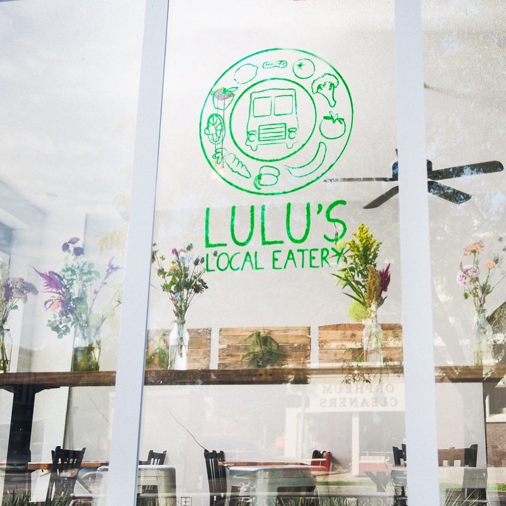
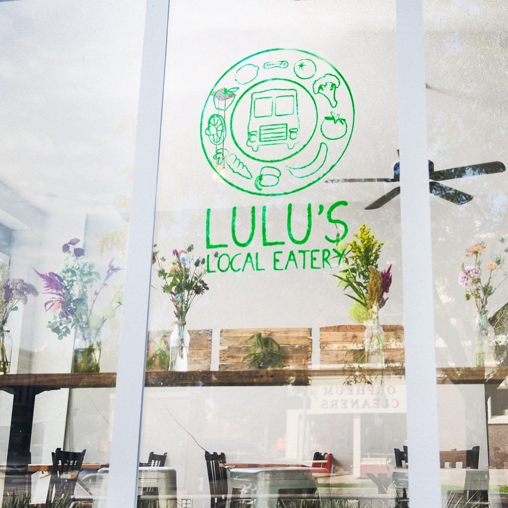
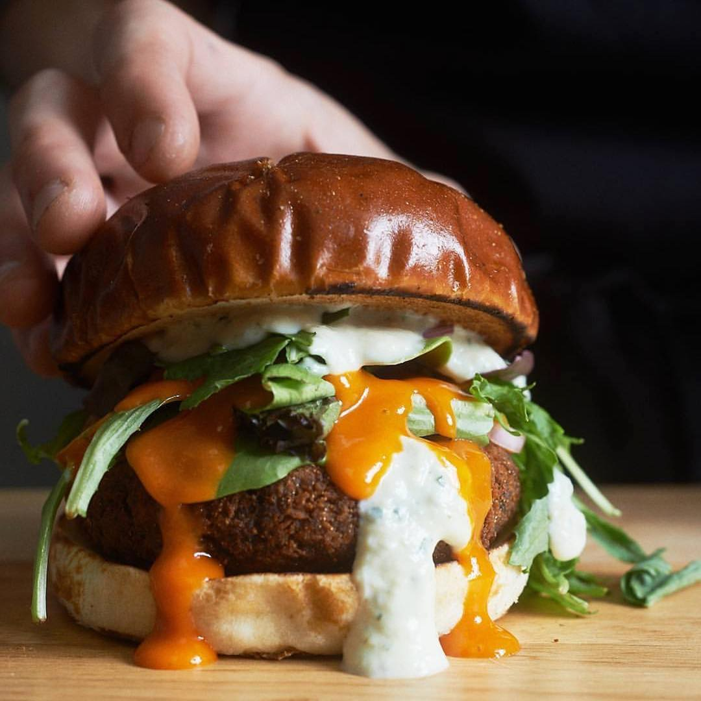
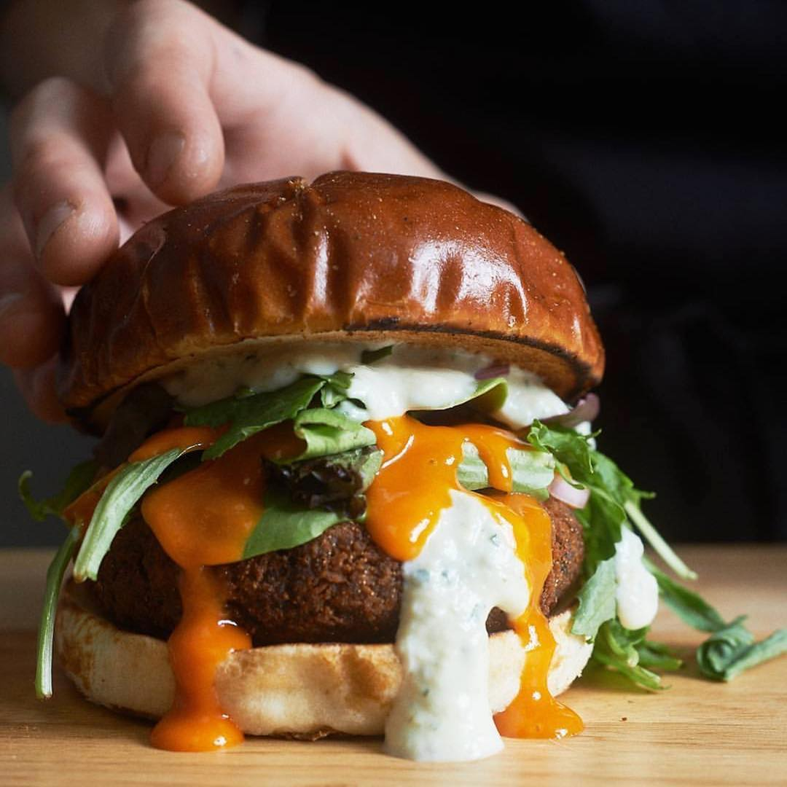
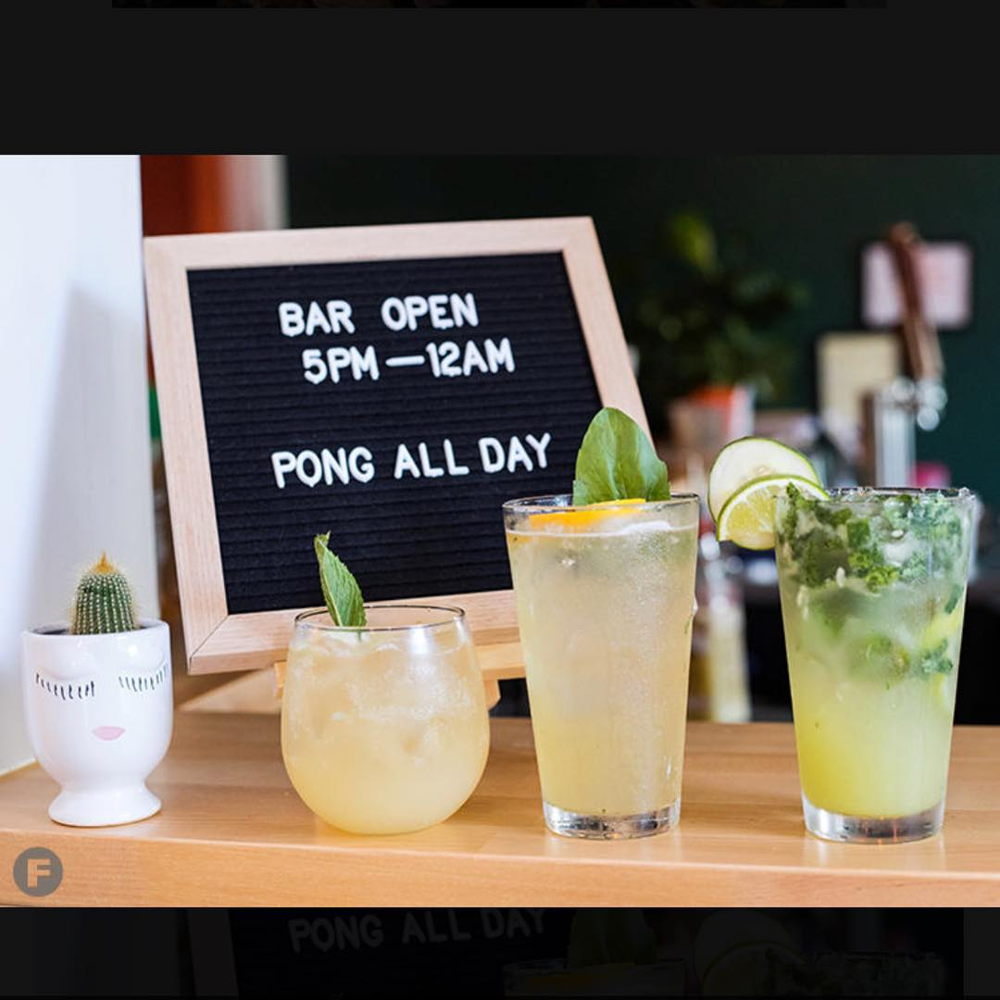
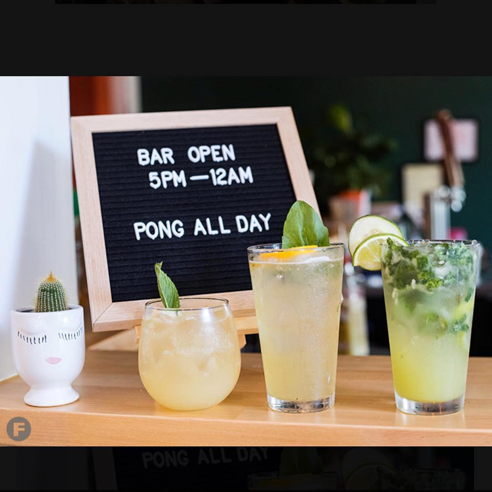

- recycling and composting 95% of our waste
- offering a 100% plant-based menu using all natural, local and organic ingredients whenever possible
- prioritizing a living wage and flexible work/life balance for our team
- offering 15% off to customers who ride their bike to the restaurant
- buying our employees a bike if they work for Lulu's for 2 years
- growing our own organic herbs on our patio garden
- repurposing materials to use in our restaurant space
- offering a seasonal menu and minimizing food waste
- using 100% compostable to-go materials
- getting a five star certification in sustainability though the Green Dining Alliance (GDA)
We offer a rotating selection of specialty and local craft beer, local artisan tea, carbonated juice, kombucha, coffee by Sump and vegan baked goods by Whisk.
Our patio is pet friendly.
 

 



 


Yup. Get 15% off when you ride your bike and show us your helmet.